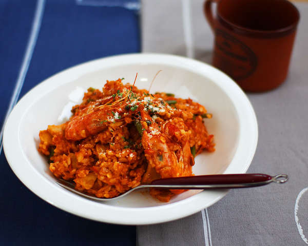

Tomato Shrimp Risotto

for 1 person
Tool
Frying pan
time
20m
Kcal
-
Ingredients
3 medium sized shrimps
1/2 king trumpet mushroom
1 bowl of rice
1 cup of tomato sauce
4 garlic stalk
1 handful of shred pizza cheese
1/2 tablespoon minced garlic
A bit of pepper
Recipe
Slice the mushroom and chop the garlic stalks.
Heat oil in the pan and fry the shrimps, minced garlic and garlic stalks.
Add the mushroom and sauce, and simmer.
Add the rice and mix well.
Turn off the heat and add the cheese and mix well. It tastes amazing even with store bought tomato sauce.
